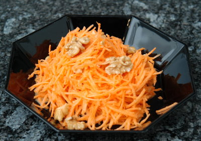

| Zutaten für 4 Personen: | |
| 600 g | Karotten |
| 1 EL | Zitronensaft |
| 2 dl | Halbrahm |
| 1 EL | Baumnuss- oder Sonnenblumen-Öl |
| Salz | |
| weisser Pfeffer | |
| 1 Prise | Zucker |
| 100 g | Baumnuss Kerne |
Karotten schälen, in feine Streifen schneiden oder raffeln.
Sofort mit dem Zitronensaft vermischen.
Rahm, Öl, wenig Pfeffer und Zucker verrühren.
Die Hälfte der Baumnüsse hacken.
Unmittelbar vor dem Servieren Karotten, Sauce und gehackte Baumnusskerne mischen.
Mit den ganzen Baumnusskernen garnieren.
Herbert Eigenmann, Code: KAN
Schmeckte am 29.1.2009 sehr fein. RE
@LINKBACK_TAG@ @WAKELOCK@